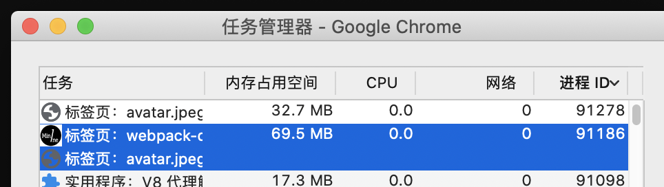
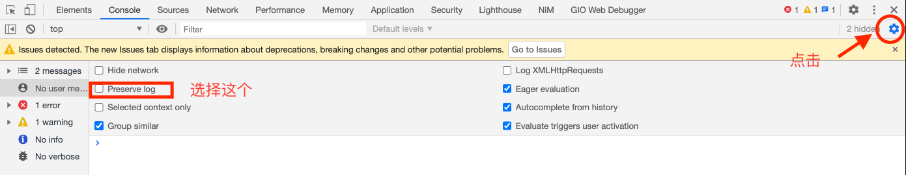

Chrome基本原理
任何一个软件的帮助，里面可以搜索，快速找到某个功能，Chrome的帮助里面的搜索做的尤其的好（书签的搜索在里面也能搜）
窗口了 - 任务管理器 - Chrome
按进程ID倒序，然后在浏览器里面打开新的标签页，观察任务管理器里面的变化
从 A 标签页中打开 B 标签页（A,B同域下的），就会使用同一个渲染进程(用a标签或者window.open)，而分别打开这两个标签页，又会分别使用不同的渲染进程(打开新标签页，再输入网址；或者在A页面右键->在新标签页中打开链接)
Chrome 浏览器会将浏览上下文组中属于同一站点的标签分配到同一个渲染进程中 (https://html.spec.whatwg.org/multipage/browsers.html#groupings-of-browsing-contexts)
rel= noopener a标签里面使用这个属性，可以切掉关联（引用关系）
1
<a href="http://www.imaginingme.cn/img/avatar.jpeg" target="_blank" class="" rel="noopener">imaginingme</a>
站点隔离: iframe —— 看是否属于同一站点，判断是否开新的渲染进程
同站（same-site） 和同源（same-origin）—— 同源策略对同一站点的限制: A,B 标签页同站非同源，依然无法通过 opener 来操作父标签页中的 DOM —— 受同源策略的限制
chrome://chrome-urls/
里面有Chrome urls的合集
开发者工具
- developers.google.cn/web/tools/chrome-devtools/javascript/breakpoints
- developers.google.cn/web/tools/chrome-devtools/javascript/reference
查看调用堆栈
Disable cache
只有在开发者工具打开的时候，才会生效; 鼠标上去可以看到提示：disable cache（while devtools is open）
搜索
- ctrl/cmd + P 搜索特定文件
samesite问题
服务端利用cookies写入一些信息，
- 禁用samesite
chrome://flags/ same-site(两个都改成disabled)
SameSite by default cookies Treat cookies that don't specify a SameSite attribute as if they were SameSite=Lax. Sites must specify SameSite=None in order to enable third-party usage. – Mac, Windows, Linux, Chrome OS, Android
#same-site-by-default-cookies
Cookies without SameSite must be secure
If enabled, cookies without SameSite restrictions must also be Secure. If a cookie without SameSite restrictions is set without the Secure attribute, it will be rejected. This flag only has an effect if “SameSite by default cookies” is also enabled. – Mac, Windows, Linux, Chrome OS, Android
#cookies-without-same-site-must-be-secure
当一个页面嵌入iframe里面，这个时候，里面set-cookie的行为，会受到安全策略的影响
场景，growingio的热力图

如果cookie写入有问题
- 可以点开set-cookie里面，三角形感叹号里面的提示，一般就是浏览器不让set的原因
- https://angel.co/today/stories/chrome-83-arrives-with-redesigned-security-settings-third-party-cookies-blocked-in-incognito-21796
- 83开始，隐私模式下，第三方cookie是被block的
preserve-log

chrome devtools protocol
https://chromedevtools.github.io/devtools-protocol/tot/Browser/
net-internals/dns
chrome://net-internals/#dns
刷DNS缓存